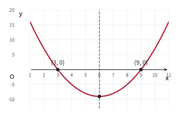
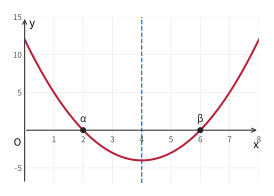
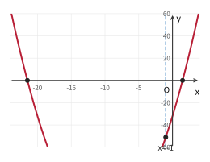

別冊章末問題の解答
1. \(x^2+ax+a+3=0\) が重解をもつような \(a\) の値と重解を求めよ。
\(D=a^2-4(a+3)=a^2-4a-12=(a-6)(a+2)=0\) より \(a=6,\ -2\)。重解 \(x=-\dfrac a2\)。
\(a=6\)：重解 \(x=-3\)。\(a=-2\)：重解 \(x=1\)。
（例題1の型）
【答案】
\[a=6:\ x=-3,\quad a=-2:\ x=1\]答
2. \(x^2-3x-5=0\ \text{の2解を}\ \alpha,\beta\ \text{とするとき},\ \alpha^2+\beta^2,\ \alpha^3+\beta^3\ \text{を求めよ。}\)
\(\alpha+\beta=3,\ \alpha\beta=-5\)。
\[\alpha^2+\beta^2=3^2-2\cdot(-5)=9+10=19\]\[\alpha^3+\beta^3=3^3-3\cdot(-5)\cdot3=27+45=72\]（例題2の型）
【答案】
\[\alpha^2+\beta^2=19,\ \ \alpha^3+\beta^3=72\]答
3. \(x^2-4x+a=0\) の2つの解の差が \(2\sqrt3\) であるとき \(,\ a\) の値を求めよ。
\(\alpha+\beta=4,\ \alpha\beta=a\)。\((\alpha-\beta)^2=16-4a=(2\sqrt3)^2=12\) より \(a=1\)。確かめ：\(x^2-4x+1=0\) の解は \(x=2\pm\sqrt3\)、差は \(2\sqrt3\)。
（例題3の型）
【答案】
\[a=1\]答
4. \(x^2-2ax+2a+3=0\) が異なる2つの正の解をもつような \(a\) の範囲を求めよ。
\(\dfrac D4=a^2-(2a+3)=(a-3)(a+1)>0\) より \(a<-1,\ a>3\)。和 \(2a>0\) より \(a>0\)。積 \(2a+3>0\) より \(a>-\dfrac32\)。共通部分：
\[a>3\]（例題4の型）
【答案】
\[a>3\]答
5. \(x^2+ax+6=0,\ x^2+6x+a=0\) が共通な実数解をもつような \(a\) の値を求めよ。
差をとると \((a-6)k+6-a=0\)、\((a-6)(k-1)=0\)。
\(k=1\)：①\(1+a+6=0\) より \(a=-7\)（②も \(1+6-7=0\) 成立）。
\(a=6\)：両方とも \(x^2+6x+6=0\)、\(\dfrac D4=9-6=3>0\) で実数解をもつので適する。
（例題5の型）
【答案】
\[a=6,\ -7\]答
6. 2次方程式 \(x^2-12x+k=0\) の2つの解の比が \(3:1\) であるとき、定数 \(k\) の値を求めよ。
解を文字でおく
解の比が \(3:1\) なので、解を \(\alpha=3\beta\)、\(\beta\) とおく。
2つの解は \(x\) 軸との交点。比が \(3:1\) になる位置を図で確かめる。

解と係数の関係
\(\alpha+\beta=12\)、\(\alpha\beta=k\)。
\[3\beta+\beta=12\ \Rightarrow\ \beta=3\]\(k\) を求める
\[\alpha=9,\ \ k=\alpha\beta=9\cdot3=27\]確認：解は \(9,\ 3\)（実数）。
（例題6の型）
【答案】
\[k=27\]答
7. 2次方程式 \(x^2-8x+k=0\) の2つの解 \(\alpha,\ \beta\) について \(|\alpha-\beta|=4\) となるように、定数 \(k\) の値を定めよ。
差の2乗を作る
\((\alpha-\beta)^2=(\alpha+\beta)^2-4\alpha\beta\)。
\[4^2=8^2-4k\]2つの解の間の長さ \(|\alpha-\beta|=4\) が、\(x\) 軸から切り取る線分の長さ。

\(k\) を求める
\[4k=64-16=48\ \Rightarrow\ k=12\]実数解の確認
\(D=8^2-4\cdot12=16>0\)。
（例題7の型）
【答案】
\[k=12\]答
8. \(x^2-7x+5=0\) の2つの解を \(\alpha,\ \beta\) とするとき、\(\alpha^2,\ \beta^2\) を解とする2次方程式を1つ求めよ。
基本量
\(\alpha+\beta=7,\ \ \alpha\beta=5\)。
新しい和と積
\[\alpha^2+\beta^2=(\alpha+\beta)^2-2\alpha\beta=7^2-2\cdot5=39\]\[\alpha^2\beta^2=(\alpha\beta)^2=5^2=25\]2次方程式
\[x^2-39x+25=0\]（例題8の型）
【答案】
\[x^2-39x+25=0\]答
9. 2次方程式 \(x^2-2ax+3a-2=0\) が、\(-1\) より大きい解と \(-1\) より小さい解を1つずつもつような定数 \(a\) の範囲を求めよ。
\(f(x)\) とおく
\(f(x)=x^2-2ax+3a-2\)。\(x^2\) の係数が正（下に凸）なので、2つの解の間に \(x=-1\) があるための条件は \(f(-1)<0\)。
例として \(a=-10\) のグラフ。点線の位置 \(x=-1\) で \(f(x)<0\) になり、解（\(x\) 軸との交点）が両側に1つずつある。

不等式にする
\[f(-1)=1+2a+3a-2=5 a - 1<0\]解く
\[-\infty < a \wedge a < \dfrac{1}{5}\]（例題9の型）
【答案】
\[-\infty < a \wedge a < \dfrac{1}{5}\]答
10. 2次方程式 \(x^2+kx+30=0\) が整数の解をもつような整数 \(k\) をすべて求めよ。
解を整数 \(\alpha,\beta\) とおく
\(\alpha\beta=30,\ \ \alpha+\beta=-k\)。
積が 30 となる整数の組
\((\alpha,\beta)=(1,30),\ (2,15),\ (3,10),\ (5,6),(-1,-30),\ (-2,-15),\ (-3,-10),\ (-5,-6)\)。
\(k=-(\alpha+\beta)\)
各組の和から \(k=-(\alpha+\beta)\) を計算する。
| \(\alpha\) | \(\beta\) | \(\alpha+\beta\) | \(k=-(\alpha+\beta)\) |
|---|---|---|---|
| \(1\) | \(30\) | \(31\) | \(-31\) |
| \(2\) | \(15\) | \(17\) | \(-17\) |
| \(3\) | \(10\) | \(13\) | \(-13\) |
| \(5\) | \(6\) | \(11\) | \(-11\) |
| \(-1\) | \(-30\) | \(-31\) | \(31\) |
| \(-2\) | \(-15\) | \(-17\) | \(17\) |
| \(-3\) | \(-10\) | \(-13\) | \(13\) |
| \(-5\) | \(-6\) | \(-11\) | \(11\) |
よって \(k=-31,\ -17,\ -13,\ -11,\ 11,\ 13,\ 17,\ 31\)。
（例題10の型）
【答案】
\[k=-31,\ -17,\ -13,\ -11,\ 11,\ 13,\ 17,\ 31\]答